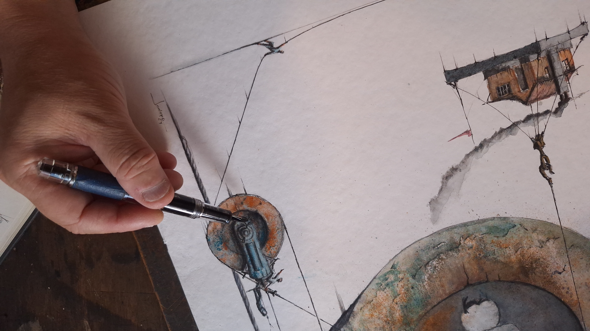
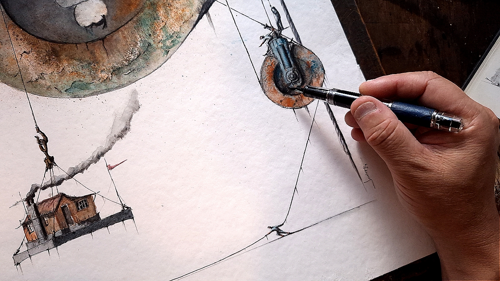
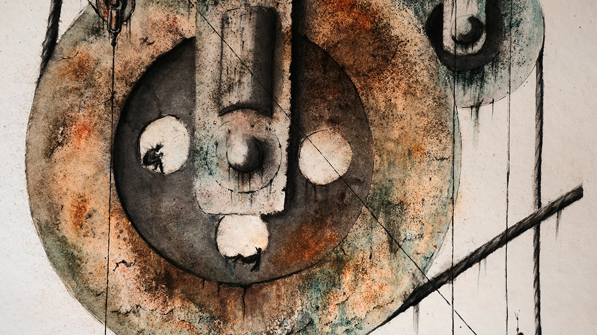
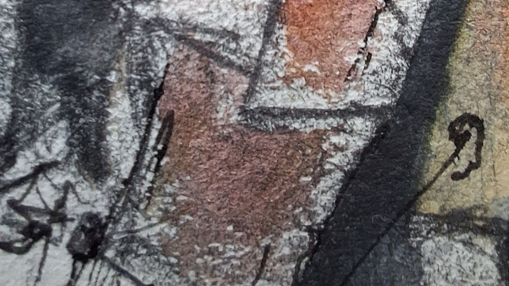
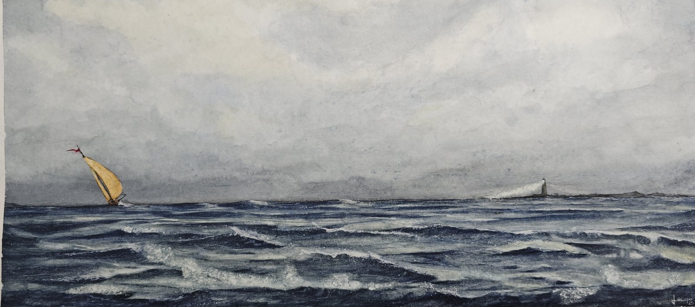
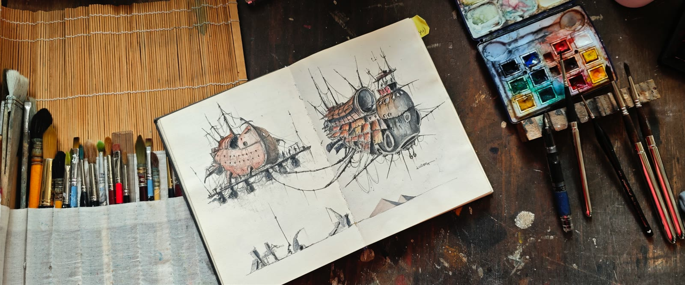
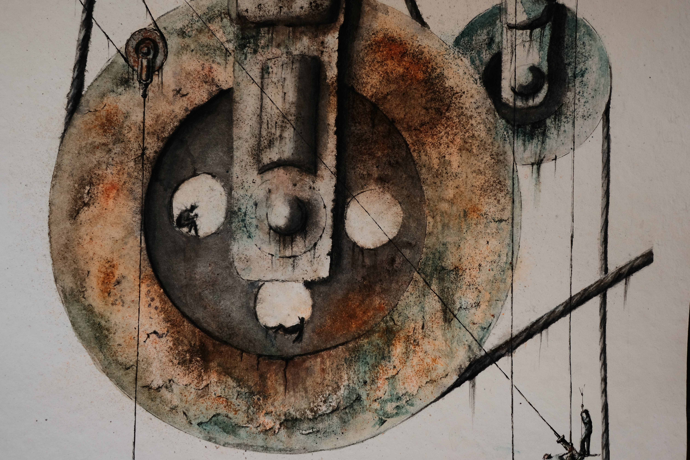
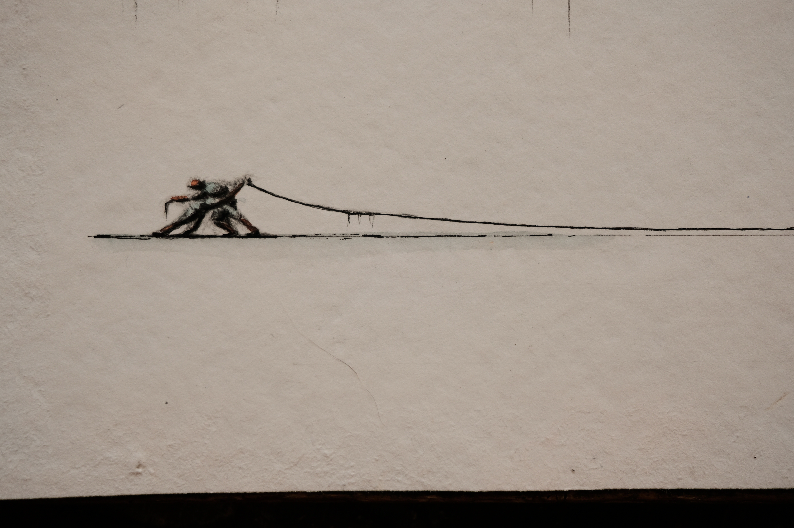
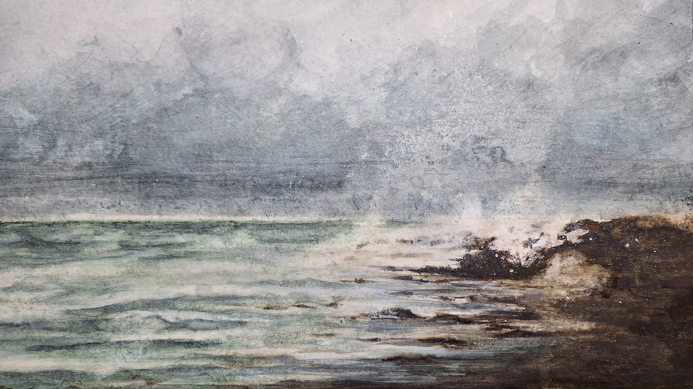

Grafito · Pluma estilográfica · Siena natural · Pátina · Acero a la intemperie
El peso del hierro, sostenido en el agua.
Una pluma estilográfica fija los pernos. El agua decide qué recuerda el hierro.
Papel · Tinta · PacienciaPelícula del estudio · 1:29
El estudio
Primero la línea. Luego el clima.
El grafito encuentra la estructura primero: un casco, una bisagra, la pequeña disputa entre el engranaje y la gravedad. La pluma estilográfica fija lo que no puede moverse; la acuarela trae el clima — ocre que se funde en óxido, gris que se asienta como humo sobre un motor frío.

01 — La obra
Lo que las máquinas recuerdan.
Pinto lo que las máquinas recuerdan: la cicatriz de una reparación, la sal en una costura, la forma en que una grúa sostiene su propio peso sin pedir permiso. La acuarela permite que esa historia aflore sin pulirla hasta borrarla.
Ocre, siena natural, negro humo, un gris que sabe a puerto. Una paleta austera, porque el dibujo debe sostener todo el peso.
03 — El estudio
Óxido, luz de puerto y el peso del hierro.

El grano, el trazo y la materia original
Cada pieza comienza sobre papel pesado y texturizado. El grano permanece visible para que la obra conserve la presencia de la mano y no de un archivo. Los originales viven sobre papel de archivo con pigmentos resistentes a la luz.


La etapa híbrida — del papel al archivo digital — forma parte del proceso: capturada bajo luz controlada, limpia, con corrección de color, sin pulir nunca hasta convertirla en algo que el papel jamás fue.
El taller es un espacio donde la técnica tradicional y la precisión del soporte se encuentran para dar testimonio de la ingeniería antigua y el pulso humano.
04 — Híbrido
Pintura antigua, luz nueva.
Obras clásicas capturadas fotográficamente y potenciadas con técnicas de trabajo digital. El postprocesado realza ciertas características de la pintura original —el grano, la pincelada, la profundidad del color— y el resultado se vende como reproducción.

Esto es una transferencia, no un filtro. Una captura de alta resolución registra lo que allí existe; el archivo elimina únicamente lo añadido por el tiempo. Cada corrección se dibuja a mano sobre una pantalla con lápiz profesional 4K, capa sobre capa. El color regresa a la piel de la pintura, la sombra vuelve al pliegue de una manga, y la estampa traslada la obra a una estancia nueva sin aplanar su antigüedad.
Luego está el lienzo en sí. Leemos el tejido, la tensión en los bordes, la ligera impronta del bastidor. El tejido se lee, no se borra. Cuando la pieza lo requiere, la impresión se realiza sobre lienzo de algodón pesado, barnizado a mano y tensado para que la superficie mantenga su textura bajo la luz en lugar de aplanarse como un póster.
Primero el papel. Luego los píxeles. Cada pieza comienza a mano y se niega a terminar allí. El pliego se fotografía bajo luz controlada, se limpia y se corrige en color; el archivo conserva el grano, el desborde y los pequeños accidentes que ninguna pantalla puede inventar.
Pantalla con lápiz Huion 16″ 4K · lienzo de algodón pesado · barniz a mano · maestro de impresión de archivo
Lo que cambia
- Barniz amarillento y polvo
- Luz de captura irregular
- Deriva cromática por el tiempo
Lo que permanece
- Craquelado y trama del lienzo
- La pincelada, la mano
- La composición original
05 — Clases
Aprende a dibujar hierro y agua.


Ejercicio de clase
Dibujar el peso
Un casco de hierro no flota: se sostiene. En el cielo de un mundo que ya no recuerda el mar, los transportes pesados cuelgan de boyas gastadas y de un gemido de remaches que se queja antes de la lluvia. Aprender a dibujarlos es aprender a dibujar el peso: la panza hundida, la línea que se comba, la sombra que llega antes que la máquina. Aquí el agua no es paisaje; es lo que se carga, lo que alimenta, lo que se pierde en el trayecto.
El pulso del tiempo y el peso de la materia
Cada trazo sobre el papel pesado no es solo dibujo; es la memoria del esfuerzo humano frente a la inercia de la máquina. El grafito busca el esqueleto y la tinta fija el límite, pero es el agua —impredecible y viva— la que devuelve al acero su respiración y su intemperie.


En el silencio del estudio, la mano repite el gesto milenario del oficio: medir, hundir el plumín, esperar a que el pigmento repose en el grano del algodón. Ninguna pantalla puede replicar la fricción de la pluma ni la paciencia necesaria para que la herrumbre cobre calidez.
Clases particulares de acuarela y dibujo técnico, construidas alrededor de aquello que no puedes dejar de mirar: una máquina, un puerto, la forma en que la tinta sostiene una línea.
- Control del agua y modulación tonal
- Dibujo a tinta para metal, engranajes y estructura
- Representación de óxido, vapor y atmósfera
- Composición marítima e industrial
- Flujo de trabajo híbrido: captura, retoque y preparación para impresión
Dos caminos
Elegí cómo empezar.
Clases uno a uno desde USD 25 la clase de prueba, o el programa completo de ocho sesiones.
Grafito primero. Nada se colorea hasta que el dibujo pueda sostenerse por sí solo.Nota del estudio · La línea
El óxido no es un color sino un proceso.Nota del estudio · La pátina
El grano permanece visible para que la pieza conserve el tacto de la mano.Nota del estudio · El papel

Contacto
Escribe al estudio.
Basta con un mensaje breve. Si te interesa una obra disponible, escribime para coordinar la adquisición. Si querés una pieza nueva, contame la referencia y hablamos del encargo.